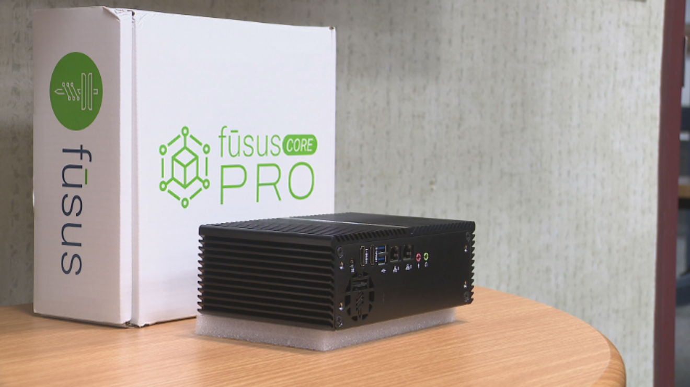
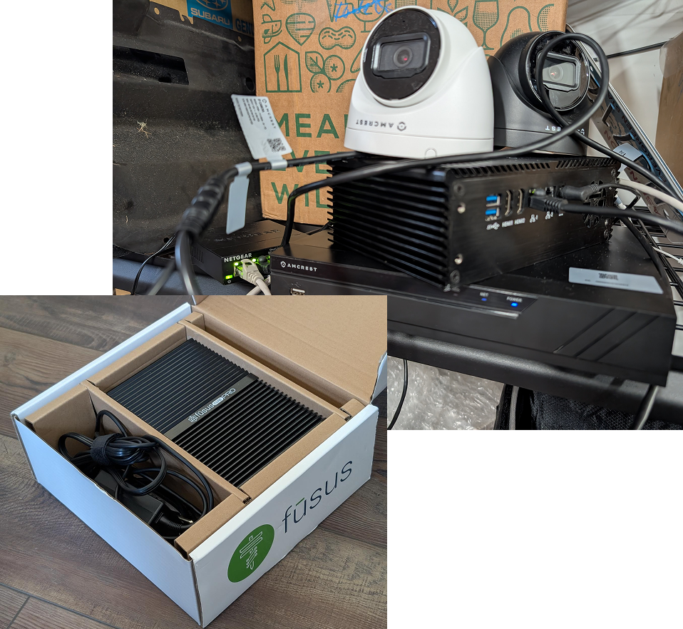
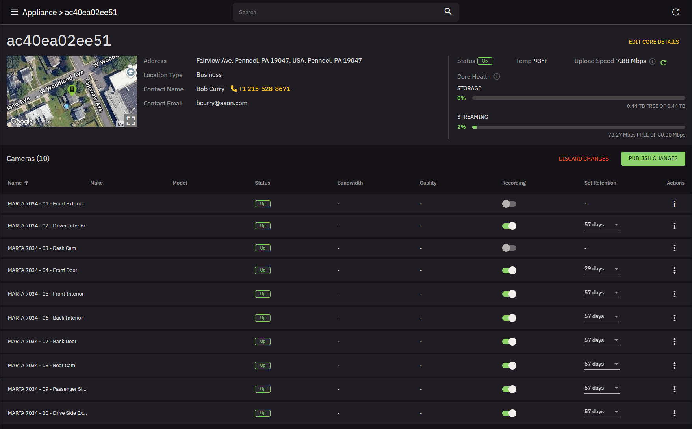
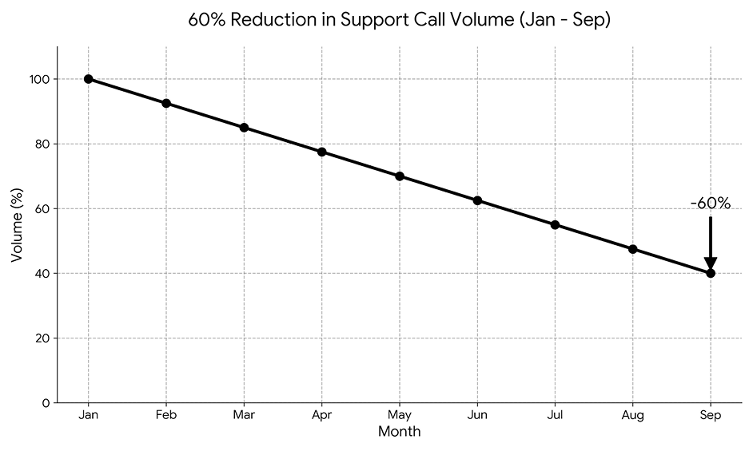

Optimizing Path to Value: Reducing Support Volume by 60%
What is Fusus?
Think of Fusus as the "universal translator" for public safety data. It is a Real-Time Crime Center in the Cloud (RTC3) platform that aggregates disparate data sources—such as live video feeds, CAD alerts, and gunfire detection—into one unified, map-based interface for dispatchers and officers.
What is a Fusus Core?
The Fusus Core is the physical "bridge" that makes the magic happen. It is a small, plug-and-play hardware appliance installed at a specific site (like a school, a business, or a city park). It securely connects local security cameras to the Fusus network, allowing those feeds to be shared with first responders in real-time without requiring expensive IT upgrades to the existing camera system.
My Role
As a Senior Product Designer at Axon, I led the design strategy that drove a 60% reduction in support volume and empowered business owners to get online independently. Building on my initial work designing mission-critical workflows for patrol officers and dispatchers, I transformed a high-friction technical process into a scalable, user-friendly configuration experience for real-time crime centers. This focus on systems thinking and cross-functional collaboration resulted in a 60% reduction in support call volume and accelerated time-to-value for enterprise customers.
Fusus Core Case Study Reel
The Challenge: Bridging the Physical-Digital Gap
The FUSIS Core is a gateway device that connects private security cameras to first responders. Previously, 100% of installations required a manual call to customer support, creating a massive bottleneck. Our mission: cut deployment times by 50% and drive a 60% reduction in support volume over nine months. 
The Strategy: Becoming the User
To design the solution, I first had to experience the problem. I ordered a Core to my home and documented every friction point—from the lack of out-of-box documentation to the technical anxiety of "messing with the router." 
Identifying the Choke Points
By mapping the journey from purchase to "active," we found three critical failures:
- Administrative Friction: Serial numbers weren't pre-assigned to organizations, requiring manual backend work before the box was even opened.
- Network Hurdles: Non-technical business owners struggled with firewalls and IP configurations.
- Camera Discovery: Users had to manually find and test complex RTSP URLs to connect their cameras.

The Solution: A Device-Aware Ecosystem
We didn't just redesign the UI; we redesigned the service.
- The Troubleshooting Engine: We built a "device-aware" chatbot. By scanning a QR code, the system identified the specific hardware model and provided a tailored, interactive setup guide.
- Automated Discovery: We implemented MAC-address-based detection to automatically pull RTSP URLs, achieving a 95% automated camera detection rate.
- End-to-End Visibility: We designed a health dashboard for first responders so they could monitor camera status and storage levels, preventing support calls before they happened.
Core Health Dashboard
The Results: A 60% Reduction in Support Volume
By launching the self-service wizard and chatbot, we moved from 0% to 60% customer-led installations. This significantly reduced operational costs and validated our "service-design" approach: focusing on the journey from the point of purchase, not just the pixels on the screen. 
Retrospective & Key Takeaways
Design Extends Beyond the Screen
The Lesson: In hardware-software ecosystems, the "User Experience" begins the moment the box is opened, not when the URL is typed.
Identifying "Latent" Internal Talent
The Lesson: Speed doesn't always require more headcount; it requires better alignment.
The Power of "Ground Truth" Feedback
The Lesson: Your internal Support teams are your best UX researchers in a high-velocity environment.